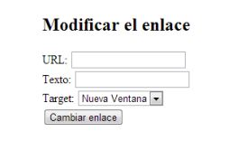

Sobre el fichero html anterior, añadir un botón, de tal forma que al pulsarlo se añada un párrafo al final del documento. Modificar el fichero js creado en el anterior ejercicio para esta nueva funcionalidad.
Sobre el primer hipervínculo del documento html dado 'a' modificar los atributos href, target y el texto que aparece en pantalla, con los datos que se solicitan de la
siguiente forma:
